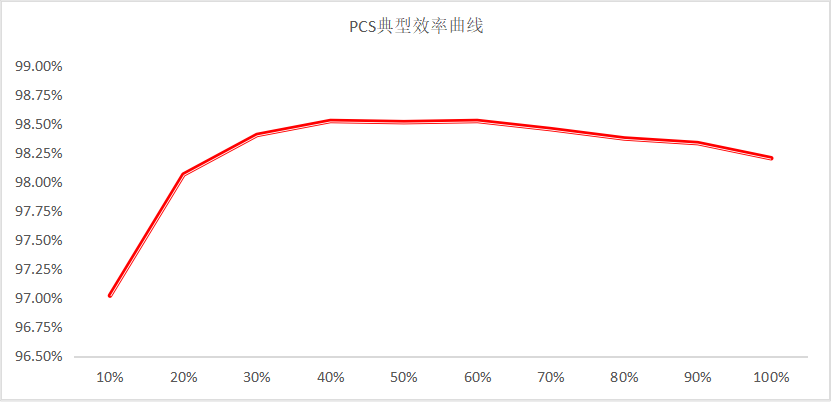
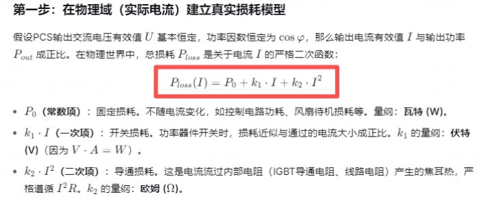
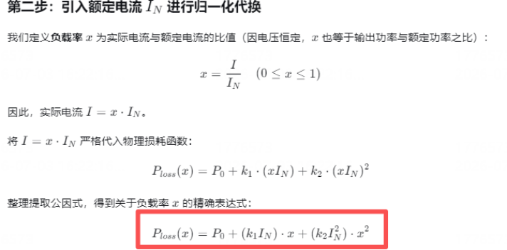
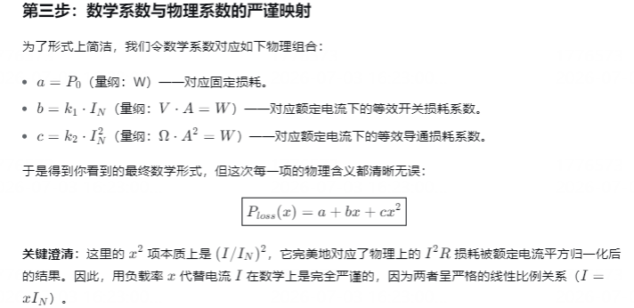
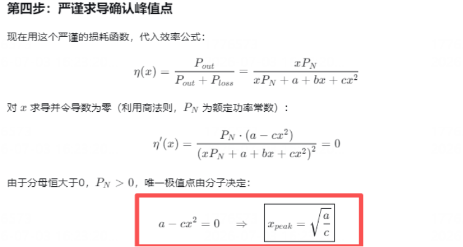
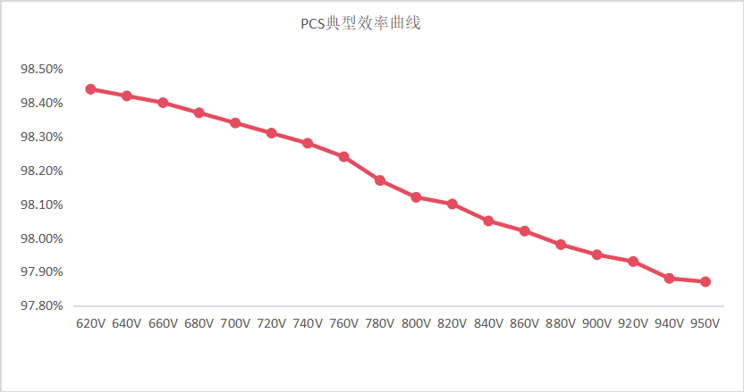
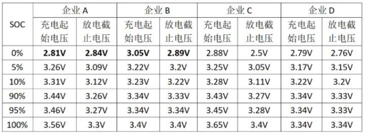

一、引言
PCS企业在宣传时往往会亮出两个效率，其一是最高效率，如99%、99.05%......这是最常见的宣传点，卷到小数点后两位；其二是满载效率，如98%、98.3%、98.5%......这个效率良心了一些，倒是更贴近项目实际应用，但也只是贴近而已。接下来，学生从PCS的效率曲线给大家分析一下，实际应用时到底需要什么效率。
二、PCS典型效率曲线
如下是PCS在不同出力功率情况下的的典型效率曲线，可以看到：
-
PCS出力在额定功率20%PN以下时，效率较低，且随着出力功率增加效率逐渐增加；
-
PCS出力在20%PN\~40%PN之间时，出现最大效率，厂家宣称的最大效率也就是从这来的；
-
PCS出力在40%PN\~100%PN之间时，效率逐渐缓缓下降。

那么问题来了，为什么PCS的峰值效率普遍在20%\~40%区间？
其实这是
类似变压器损耗包含空载损耗和负载损耗，PCS的损耗包含固定损耗（空载损耗）和可变损耗（负载损耗），两者损耗主要来源为：
-
固定损耗：与负载电流无关，比如辅助电源损耗、PCS内部的电感/变压器铁芯损耗等；
-
可变损耗1：核心是导通损耗，与负载电流的平方成正比，主要包括电感/变压器绕组损耗（铜损）、功率器件导通压降损耗等；
-
可变损耗2：功率器件开关损耗，与负载电流近似成正比；
学生的数学知识差不多还给大学老师了，还是让DS来帮学生从数学的角度分析一下最佳效率点和损耗的关系。




综上，峰值效率点完全由固定损耗与导通损耗系数的比值相关。在实际产品应用中，固定损耗值越小、导通损耗越大，则峰值效率点越低；当固定损耗值一定时，降低导通损耗，则峰值效率点会高一些。至于峰值效率点做在20%还是30%还是40%或者50%，应是PCS企业在产品设计时候综合考虑成本与性能下的选择了！
我们再看另外一下PCS在固定输出功率时，效率与直流侧电压的关系，这个应是我们重点关注的。

从上图可知，当输出功率不变时，PCS效率与直流侧电压的关系近似为线性关系，主要原因为：
功率器件的开关损耗（开通及关断）与直流母线电压近似成正比，是高压下效率下降的核心增量来源。
三、我们应该关注什么效率
通过上面的分析，我们知道：
-
电压越低，效率越高；
-
峰值效率出现在20%\~40%PN区间，满载效率低于峰值效率；
那么实际应用中，我们既不能关注峰值效率，也不好关注满载效率，那么我们应该关注什么效率？
答案：电池系统实际运行电压范围内的加权平均效率。
举个例子来说，对于DC 1000V储能系统，如125kW/261kWh All-In-One储能柜，采用314Ah电芯，电池簇成簇方式为1P260S，额定电压为832V；采用125kW PCS，电压范围为DC600V\~DC1000V。
那么电池系统实际运行电压范围是多少？
在【致知—PCS】浅谈AC800V 储能变流器的应用一文中，学生调研了部分企业的314Ah电芯在SOC 0%\~100%时对应的电压，如下：

实际储能系统在充放电时，DOD常取90%或者95%；以90%DOD为例，则对应SOC区间为5%\~95%。以企业A为例，其在5%\~95%SOC区间内的电压范围为：
-
充电：电芯电压范围为3.26V-3.46V，电池簇电压范围为847.6V-899.6V；
-
放电：电芯电压范围为3.09V-3.27V，电池簇电压范围为803.4V-850.2V；
那么对于集成商来说，应重点考察PCS在803.4V\~850.2V区间的平均放电效率、在847.6V\~899.6V的平均充电效率。
对于1500V储能系统用的PCS选型，也是一样的思路。
下面，我结合PCS的效率数据，做下对比参考。
|序号 |状态 |最大效率 |最大满载效率| 满载效率 |加权平均效率| |---|---|-----|------|:----:|----------| | 1 |充电 |98.9%|98.4% |≥97.5%|97.8% | | 2 |放电 | 99% |98.6% |≥97.7%|98.4% |
注：上述数据仅供参考，仅用于对比分析。具体选型时需PCS企业提供实际的效率数据。
通过上表数据，你有什么思考？学生分享一下思考，如下：
-
PCS的充电效率和放电效率不一致，计算储能效率和收益测算时不能拿同一效率计算；
-
PCS的最佳效率点到底应该设计在多少？要结合储能项目的实际运行工况和成本综合评估。比如，若大部分时间工作在50%PN附近，那是不是可以考虑把最佳效率点设计在50%PN？
-
对于EMS来说，在进行多台PCS的功率分配时，是否可以在功率分配策略时把PCS的最佳效率点考虑进去呢？有没有哪家EMS在做的呢？
🔍 关注【储能小课堂】不定期分享储能干货
👇 点击下方一键关注，不错过硬核内容
版权声明 · 转载规范
本公众号所有原创内容，均受著作权法保护。
-
未经本账号授权，任何平台、个人及机构不得擅自转载、摘抄、剪辑、篡改本文内容用于商业用途；
-
非商业个人转载，需提前私信后台申请授权，转载时需标注原文作者及本公众号完整来源；
-
严禁洗稿、拼接、二次篡改原创内容，一经发现，将依法追究侵权责任。
原创深耕不易，恳请各位尊重创作者劳动成果，合作共赢。